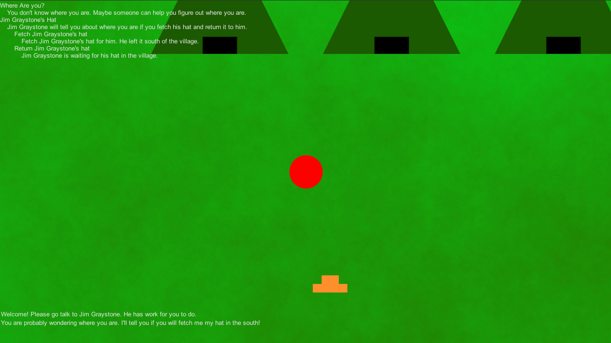
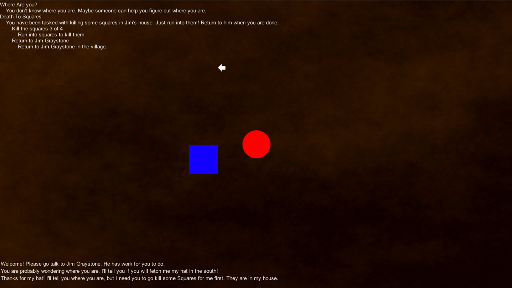

1GAM May 2014 - Quests
| This project I worked on... | Percent of overall project |
|---|---|
| Unity inspector customization | Significant |
| XML Serialization | Moderate |
| C#, OO hierarchy | Moderate |
| RPG-like Quest Systems | Moderate |
| Tools and Resources | |
|---|---|
| Unity 4.3 | Game Engine / Editor |
| C# | Scripting Language |
| Visual Studios Express 2013 | IDE |
| GIMP | Image Editor |
This month for 1GAM, I wanted to work on something with a little bit of a story. I'm not a writer so the way I decided to attempt this was to work on an RPG quest system. The system is very basic and doesn't have much flexibility, but overall I was quite happy with what I learned and made. Quests can be started, updated, and completed through interaction with an NPC, an collectible object, or when killing enemies. Quests can be simple and completed in one step or have many objectives that need to be completed. When interacting with quest-related objects, they can check whether you are on the correct quest or objective of the quest or already completed a pre-requisite objective (but not a completed quest). Starting or ending a quest can place objects in the world that are specific to the quest to ensure the player doesn't interact with something too early or progress the quest out of order. The game is used as an example of several of these cases. Quest progress and NPC dialog is displayed on the screen.
| Media | |
|---|---|
|  |  |
I wanted to make a game that told a story. The closest I came to this was making a simple quest system. It would have been nice to make a more complete game, but I'm not unhappy with what I accomplished. I learned a lot working on this. I also wanted to gain some experience working on custom inspector GUI. This was the perfect opportunity for this because inputting each quest and their NPC/object interactions by hand would have been a big chore! It was actually pretty fun figuring out how all the pieces interacted. But I wouldn't want to do it again if I didn't have to. I did learn a lot through that experience though.
I had it in my head that I needed to export the master quest list so that it could be read in at the start of the game. So I spent a week figuring out XML serialization. I got it working except that I didn't have object creation set up correctly to read in all of the details of the quest from the XML file. This would have been a minor fix but it was at this time that I realized that I did not need to export to XML at all! Unity saves the contents of variables edited through the inspector without me having to import myself. I knew this of course, because practically every game uses the inspector values to some extent. But I didn't make the connection that I could use this feature to keep around for a full data structure of quests. Nevertheless, I learned a lot about XML serialization in C# to get it working in the first place.
I probably spent the most time this month working on creating custom editors for the inspector. I first made one for quest input. I thought this would be a good idea because the master list of quests was a List of custom Objects. I wanted input to be as simple as filling in values for the pre-requisite checks without having to worry about keeping straight the unique IDs of each quest and objective. To do this, each quest's and objective's ID is automatically incremented with each that is added to their respective lists. For convenience, moving, adding, and deleting of any quest or objective is as easy as clicking a button. These IDs are updated automatically without my worrying about it. The second custom editor I made is for quest objects or NPCs. These have to check against the player's quest log to see if he has the pre-requisite before quest interaction is continued. Since each quest is different and needs to check against different conditions, it was important to display these options in a logical manner and in a way that didn't present options that were not relevant. For example, if a quest-check does not need to check against an objective's state, the objective options are not need to be displayed. So, in terms of the inspector, the state of a checkbox boolean can determine what other input options are displayed below it. So to complete these, I had to learn how to make a custom inspector and how to communicate that information to the data structures in needed. Correct information presentation was important, as well as ease-of-use, but "looking good" was far from important to me. So I had to learn basics of layout and design of the input fields.
The quests system is bare-bones and may not be suitable for larger-scale RPGs due to its simplicity, but I spent a lot of time working out how to get a system that can be used for different types of quests. I thought about different types of quests in different RPGs that I have played before. This system allows for quests that are updated when killing an enemy ("kill 5 rats for me"), talking to an NPC ("ask Billy if he has seen my book somewhere"), or picking up items ("find the sacred crystal"). Quests can have multiple objectives to make them less linear or more story-driven ("kill 5 rats, talk to Billy, and find the crystal"). To properly gate the quests and player progression, pre-requisites are checked upon interaction with a quest object. This is probably the weakest link in the chain. Only one quest can be checked against and the player must be currently on the quest (completed quests are not stored anywhere and therefore could not be checked in its current form). The state of objectives in that quest could be checked though. An objective to be checked for being either completed or not, and a separate objective could be updated if need be. Objectives and have a goal amount or a simple completeness boolean ("kill the evil wizard" vs "3 of 5 evil wizards killed"). All of these things are simple in concept but I did have to plan out for them design around the many possible cases the quests might present, so I learned a lot about planning and accounting for different use cases.
I would have liked to have been able to spend more time on an actual story. The game itself is merely a test and example of several quest types and how interaction takes place. The story was thrown together with little thought. I'm not skilled in the area of writing, so I was discouraged from putting much effort in it in the first place. But I won't get better without practice, so hopefully I can do something more in the future.
{kind=link}
{kind=link}